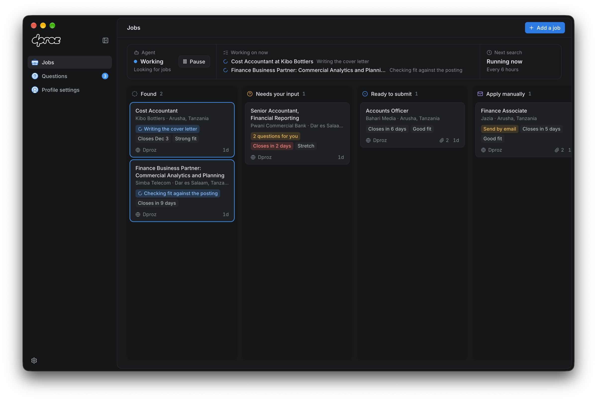

An agent that applies to jobs for you
Give it your resume once. It looks for jobs a few times a day, writes a resume and cover letter for each good match, applies in its own browser, and keeps a board of everything it sent.


-
Hand over your documents
Resume, certificates, references, an old cover letter. It reads them and writes down what it knows about you, which you can correct.
-
It searches and applies on its own
Every few hours it checks what is new. Each good match gets its own tailored application, judged before it is sent.
-
You see everything it sent
Every job is a card with the exact documents that went out. When it needs something only you know, it asks once.
What you need
A Mac with Apple Silicon, or Linux on x64, and Claude Code installed and signed in. The agent runs on your own Claude account, and everything it knows about you stays on your computer.
First open on a Mac
The app is not notarised yet, so macOS blocks it. After dragging it to Applications, run this once:
xattr -cr "/Applications/Dproz Agent.app"